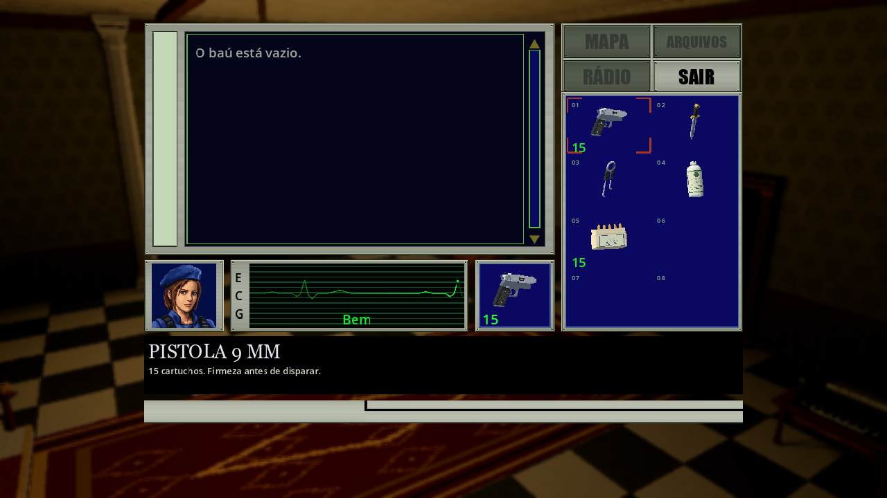
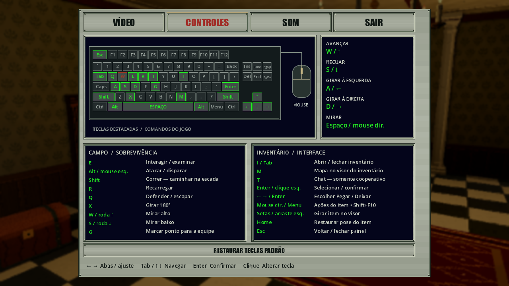
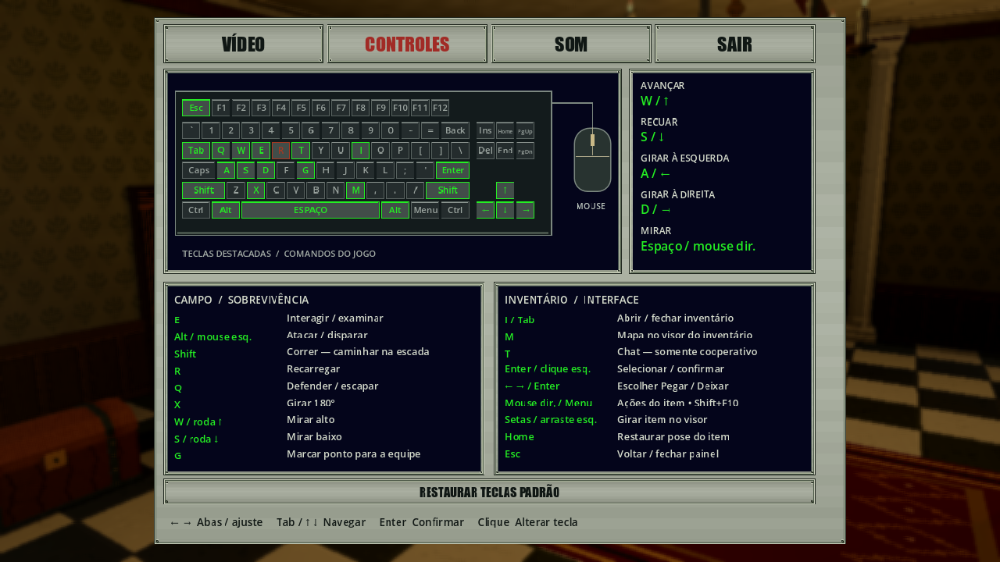
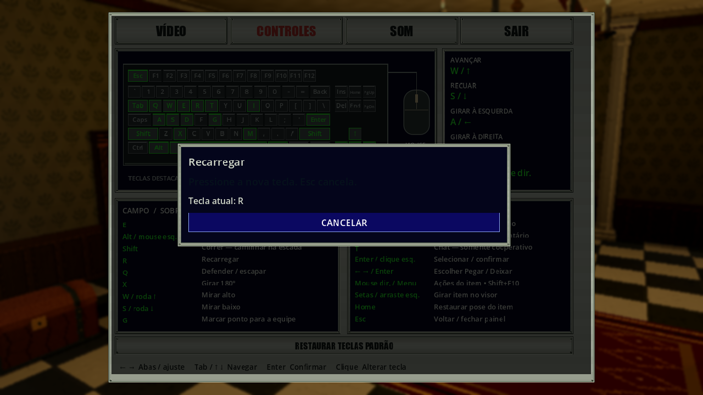

Teclas verdes e detalhes no baú · 15/10/2026
Complemento posterior: abertura/fechamento da tampa e regra de interação frontal em Animações do baú. As capturas e resultados desta rodada permanecem como evidência anterior a esse complemento.
Complemento posterior: a própria lista do baú também mostra detalhes por clique simples, com transferências por Enter, duplo clique/arraste. As evidências abaixo preservam a rodada de 566 + 70 verificações.
No baú, um clique em um item do inventário mostra nome e descrição no painel preto inferior, como no inventário comum. Não deposita nem altera os slots. Um slot vazio limpa os detalhes. A lista do baú continua no visor; duplo clique e arraste conservam as transferências e validações anteriores.

No teclado virtual, teclas vinculadas usam o verde 24ee23 do contador do
inventário; hover e foco por setas usam texto/borda no vermelho a63821 da
seleção dos slots. Teclas sem vínculo permanecem cinza. Os indicativos nos
painéis também são verdes e continuam sem preenchimento, com foco fino.



O aviso “Pressione a nova tecla. Esc cancela.” fica verde e pulsa suavemente em um ciclo de dois segundos, como PRESSIONE QUALQUER TECLA na abertura. Apenas o aviso pisca; título, tecla atual e botão permanecem visíveis. Conflitos mantêm a captura e seu pulso; cancelar ou concluir remove a animação.


Pausa, desfoque e música abafada continuam somente no solo. Host e cliente cooperativos mantêm tempo/autoridade ativos. Não há tooltips.
Implementação e validação
GameUi.UpdateInventory deixava os detalhes vazios em todo chestMode;
agora usa a seleção existente, sem alterar comandos de transferência.
UiKit.InventorySelection compartilha o vermelho com InventorySlot e
KeyboardDiagram. SettingsPanel/SettingsBindings usam QuantityGreen;
o aviso é animado em _Process, sem depender do relógio pausado da simulação.
Core, rede, save de campanha, assets e SFX permanecem sem alteração por este patch.
Fixture Tools/PauseMenuAcceptance.tscn, com
--settings-suite --binding-suite --restore-suite --style-suite --accent-suite.
Tools/UiAccentAcceptance.cs confere pixels vermelhos/verdes, variação real de
alpha, relógio por modo, detalhes do baú, slot vazio e ausência de transferência
por clique simples. Reexecuta navegação, remapeamento, cancelamento, restauração,
salvamento, mira e inventário/mapa/baú em solo, host e cliente ENet local.
PresentationAcceptance --chest-only verifica também duplo clique/arraste.
São inputs sintéticos em renderer Compatibility; preferências pessoais são
restauradas e perfis/campanhas de teste isolados.
Resultados finais em Build/ui-accents-2026-10-15/report.json e
Build/ui-accents-*.log. Capturas conferidas no Godot, com proporções 4:3/16:9.
Base Git e059383, com alterações preexistentes preservadas; não é SHA final.
Rodada principal: 566 verificações aprovadas, zero falhas, solo/host/cliente
ENet local. Pixels de hover/foco vermelho e vínculos verdes, pulso real da captura,
nome/descrição no baú sem transferência e slot vazio passaram nos três modos.
Log final sem erros, avisos ou MTU. Também passaram 86 CoreTests,
16 verificações Python, build C# sem avisos/erros e importação Godot .NET.
O teste dirigido adicional do baú passou 70 verificações, zero falhas, em
solo e host cooperativo: duplo clique/arraste, capacidade cheia, rejeição de
versão antiga, rolagem, detalhes sem transferência e retorno ao inventário.
Seu log Build/ui-accents-chest.log também encerrou sem erros ou avisos.
A tentativa inicial terminou com timeout da mira sintética no host: o log mostrou
Space mantido pela fixture, mas a ação de mira desativada. Repetições com Echo
não restauravam a ação; a fixture agora reenvia pressionamentos completos pelas
APIs de input antes da leitura do App. Não muda Controls/InputFrame ou autoridade.
O log intermediário Build/ui-accents-render.log foi preservado.
Galerias e hashes atualizados por Tools/build_public_galleries.py --refresh-ui-style.
As imagens da revisão anterior permanecem em media/history/pre-accents-2026-10-15/.
Sem controles físicos, audição crítica, Internet, campanha completa, exports ou
profiling. ENet local dirigido não homologa multiplayer completo; não há mudança
de protocolo/save que exija reexecutar a matriz completa de concorrência/restore.